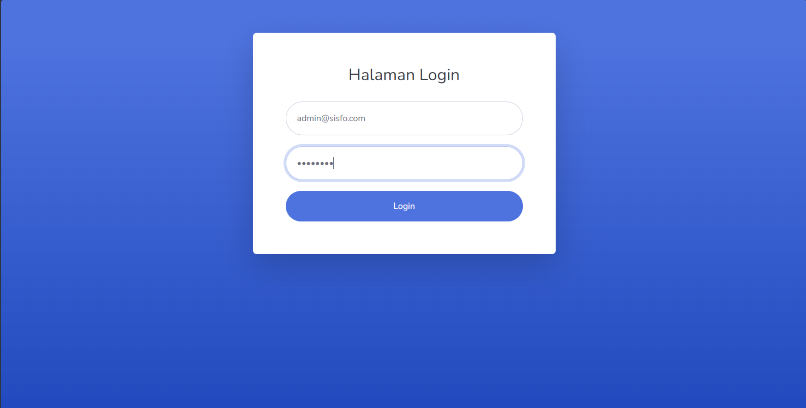
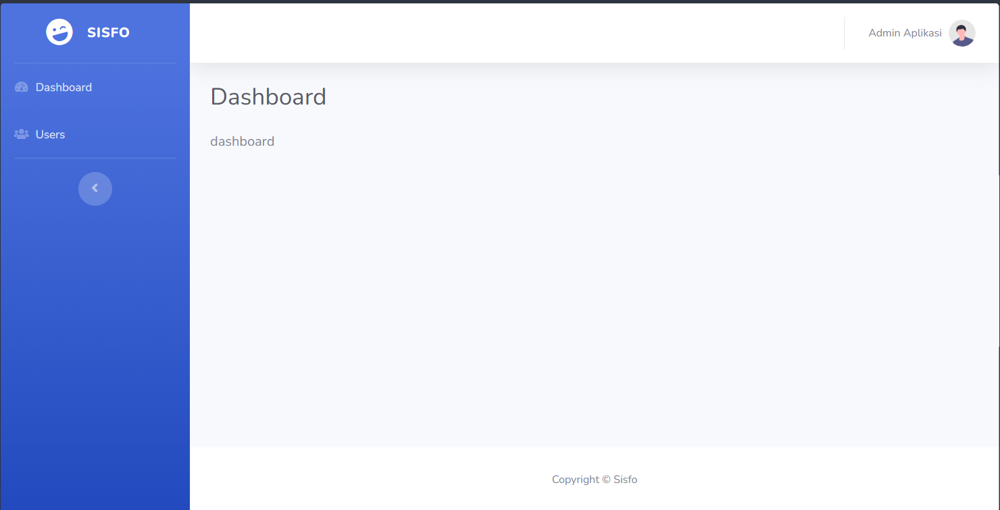
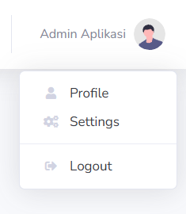
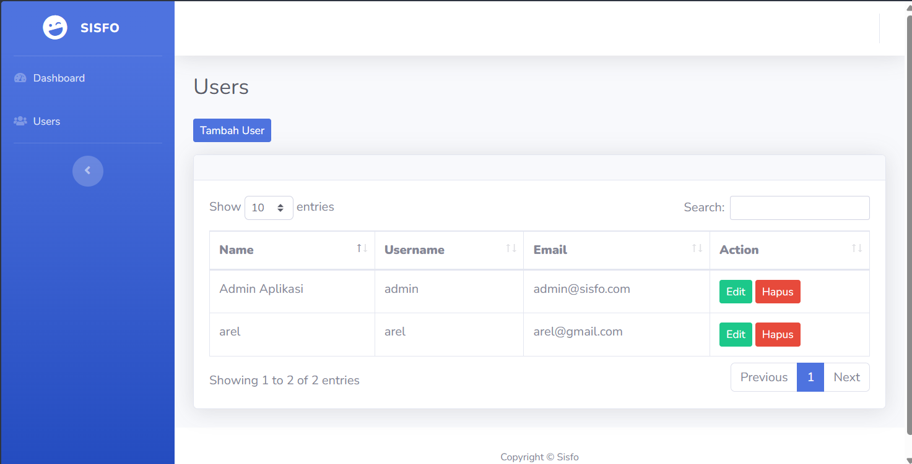
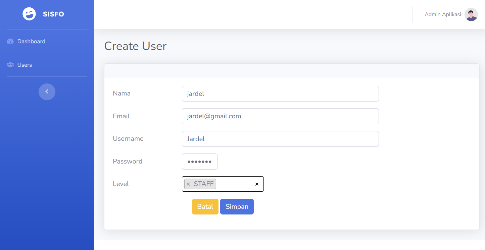
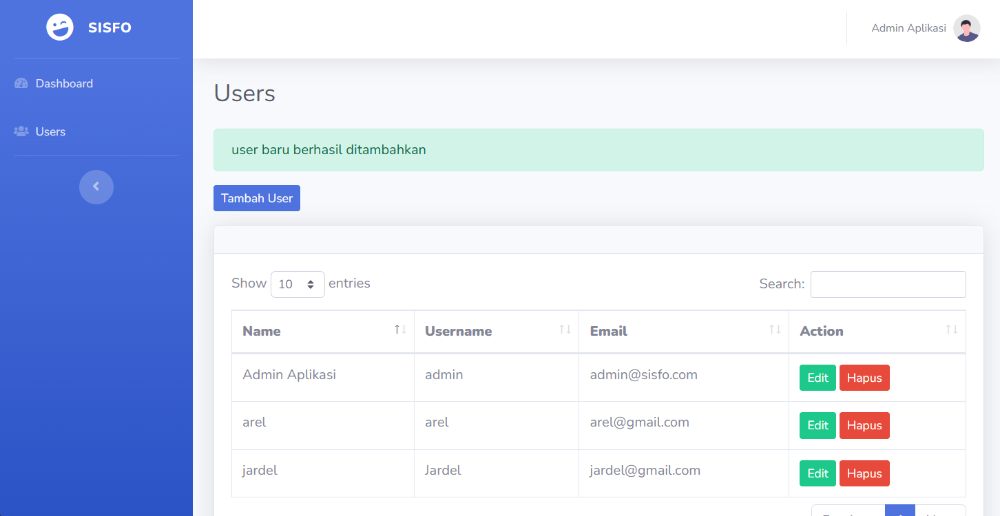

Laporan Praktikum 9
Mata Kuliah: Pemrograman Web
Jardel Poliviera
3 Juni 2026
Selesai
1. Pembuatan Project dan Konfigurasi Database
Langkah awal dimulai dengan membuat project Laravel baru bernama laravel-sisfo menggunakan Composer melalui perintah:
Setelah project berhasil digenerate, konfigurasi database disesuaikan pada file .env dengan mengatur parameter koneksi DB_DATABASE=laravel_sisfo. Project kemudian dijalankan menggunakan perintah php artisan serve.
2. Implementasi User Authentication dan Bootstrap Scaffolding
Sesuai dengan panduan pada modul "Laravel UI Bootstrap dan Templating", otentikasi bawaan diaktifkan dengan menginstal package laravel/ui. Perintah berikut dieksekusi untuk menambahkan scaffolding Bootstrap beserta modul auth:
php artisan ui bootstrap --auth
npm install && npm run dev
Proses ini secara otomatis mengenerate struktur Controller Auth (seperti LoginController, RegisterController) serta struktur views di dalam folder auth/ dan layouts/app.blade.php. Selanjutnya, perintah php artisan migrate dijalankan untuk membuat tabel-tabel bawaan ke dalam database MySQL.
Hasil Langkah 2 (Halaman Login Default):
Berikut adalah tampilan antarmuka halaman login default Laravel setelah dicompile menggunakan Bootstrap sebelum diterapkan kustomisasi template eksternal.

3. Kustomisasi Tabel User dan Database Seeding
Struktur default tabel users bawaan Laravel dimodifikasi dengan menambahkan beberapa fields baru yang krusial untuk Sistem Informasi Sekolah, yaitu username, level, dan status. Modifikasi ini dilakukan dengan membuat file migrasi baru menggunakan perintah:
Setelah mengubah skema tabel di dalam file migration, pembuatan user administrator pertama diselesaikan memanfaatkan fitur seeding. File AdminSeeder.php dibuat dan diisi dengan akun admin default, kemudian dieksekusi menggunakan:
4. Templating dan Layouting (Integrasi SB Admin 2)
Proses integrasi tampilan grafis (UI) dilakukan dengan mengadopsi template berbasis Bootstrap, yaitu SB Admin 2. Seluruh aset statis ditempatkan di dalam direktori public/sbadmin. Layout global utama dipisahkan ke dalam file view/layouts/main.blade.php, yang memanggil komponen sidebar.blade.php dan topbar.blade.php melalui direktif @include, serta menyediakan penampung dinamis berupa @yield('judul') dan @yield('konten').
Hasil Langkah 4 (Halaman Login Berhasil Dikustomisasi):
Setelah melakukan kustomisasi kode program pada file app.blade.php, tampilan halaman login berubah sepenuhnya menggunakan visualisasi gradasi biru dan form terpusat khas template SB Admin 2.

Hasil Langkah 4 (Halaman Utama Dashboard SISFO):
Ketika pengguna berhasil melakukan autentikasi login ke dalam sistem, aplikasi akan mengarahkan pengguna menuju halaman Dashboard utama yang telah terintegrasi dengan tata letak SB Admin 2 secara rapi dan responsif.

Hasil Langkah 4 (Dropdown User Informasi pada Topbar):
Komponen navigasi atas (topbar.blade.php) berhasil menampilkan nama user yang sedang aktif beserta interaksi menu dropdown profil, pengaturan, dan tombol logout.

5. Pengembangan Fitur CRUD Manajemen Users
Modul manajemen data user dibangun menggunakan resource controller melalui eksekusi perintah:
Dan didaftarkan pada file routing routes/web.php menggunakan perintah Route::resource('users', UserController::class);.
A. Create (Tambah User)
Halaman tambah user memanfaatkan komponen input teks dan select option bergaya ganda (multiple select) menggunakan pustaka Javascript Select2 untuk mendefinisikan level hak akses user. Berikut adalah pengisian form saat menambahkan data user baru:

B. Read (Menampilkan Data User & Notifikasi Berhasil)
Data yang dikirimkan melalui form input diproses oleh fungsi store() di dalam controller untuk disimpan ke dalam database. Sistem kemudian mengalihkan halaman (redirect) kembali menuju indeks daftar user sembari mengirimkan sebuah sesi status berupa alert sukses. Berikut merupakan visualisasi tabel daftar user yang terintegrasi dengan DataTables beserta alert sukses:

C. Update & Delete (Ubah & Hapus Data)
Proses manipulasi data lanjutan diselesaikan dengan menyediakan tombol aksi "Edit" yang mengarah ke metode edit() untuk memperbarui kolom nama atau level user, serta tombol "Hapus" yang memanfaatkan form bermetode DELETE dan konfirmasi pop-up JavaScript sebelum memicu fungsi destroy() pada controller untuk menghapus entitas data dari database.
Detail Praktikum 9
- Pembuatan Project DB
- Auth & Scaffolding
- Migrasi & Seeder
- Integrasi SB Admin 2
- CRUD Manajemen Users